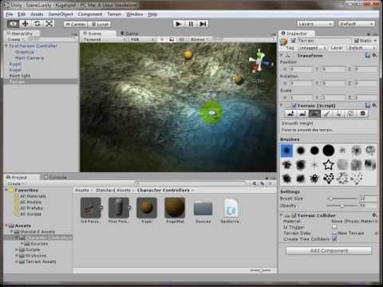

Unser Spiel aus dem ersten Teil funktioniert im Prinzip schon, sieht aber noch gar nicht schön aus. Daher werden wir im nächsten Teil etwas Farbe und Texturen in die Hand nehmen und die Landschaft anschaulich gestalten. Außerdem kümmern wir uns darum, dass die Kugeln sich auch bewegen und wie echte physikalische Objekte verhalten.
